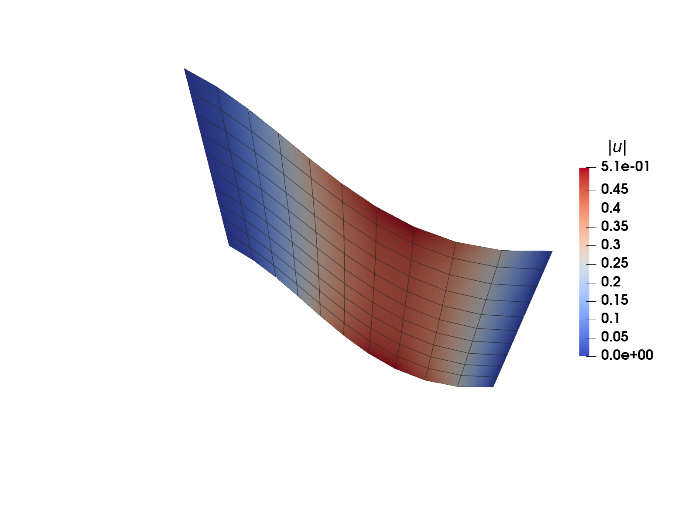
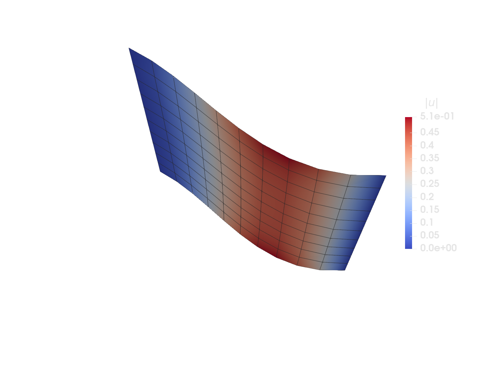

runic: off
Linear shell


Figure 1: Magnitude of the deflection of the shell (deformation magnified).
Introduction
In this example we show how shell elements can be analyzed with Ferrite. The shell implemented here comes from the book "The finite element method - Linear static and dynamic finite element analysis" by Hughes (1987), and a brief description of it is given at the end of this tutorial. The first part of the tutorial explains how to set up the problem.
Setting up the problem
using Ferriteusing ForwardDifffunction main() #wrap everything in a function...First we generate a flat rectangular mesh embedded in 3D.
grid = generate_grid(Quadrilateral, (10, 10), zero(Vec{3}), Vec((10.0, 10.0, 0.0)))Here we define the bi-linear interpolation used for the geometrical description of the shell. We also create two quadrature rules for the in-plane and out-of-plane directions. Note that we use reduced integration for the in-plane integration, to avoid shear locking.
ip = Lagrange{RefQuadrilateral,1}()qr_inplane = QuadratureRule{RefQuadrilateral}(1)qr_ooplane = QuadratureRule{RefLine}(2)cv = CellValues(qr_inplane, ip, ip^3)Next we distribute displacement dofs,:u = (x,y,z) and rotational dofs, :θ = (θ₁, θ₂).
dh = DofHandler(grid)add!(dh, :u, ip^3)add!(dh, :θ, ip^2)close!(dh)For the boundary conditions, we also want a vertex set for one corner, in addition to the facet sets already included in the generated grid.
addvertexset!(grid, "corner", x -> norm(x) < 1e-6)Here we define the boundary conditions. On the left edge, we lock the displacements in the x- and z- directions, and all the rotations.
ch = ConstraintHandler(dh)add!(ch, Dirichlet(:u, getfacetset(grid, "left"), (x, t) -> (0.0, 0.0), [1,3]) )add!(ch, Dirichlet(:θ, getfacetset(grid, "left"), (x, t) -> (0.0, 0.0), [1,2]) )On the right edge, we also lock the displacements in the x- and z- directions, but apply a prescribed rotation.
add!(ch, Dirichlet(:u, getfacetset(grid, "right"), (x, t) -> (0.0, 0.0), [1,3]) )add!(ch, Dirichlet(:θ, getfacetset(grid, "right"), (x, t) -> (0.0, pi/10), [1,2]) )In order to not get rigid body motion, we lock the y-displacement in one of the corners.
add!(ch, Dirichlet(:u, getvertexset(grid, "corner"), (x, t) -> (0.0), [2]) )close!(ch)update!(ch, 0.0)Next we define relevant data for the shell, such as shear correction factor and stiffness matrix for the material. In this linear shell, plane stress is assumed, i.e. $\sigma_{zz} = 0$. Therefore, the stiffness matrix is 5x5 (opposed to the normal 6x6).
κ = 5/6 # Shear correction factorE = 210.0ν = 0.3a = (1-ν)/2C = E/(1-ν^2) * [1 ν 0 0 0; ν 1 0 0 0; 0 0 a*κ 0 0; 0 0 0 a*κ 0; 0 0 0 0 a*κ]data = (thickness = 1.0, C = C); #Named tupleWe now assemble the problem in standard finite element fashion
nnodes = getnbasefunctions(ip)ndofs_shell = ndofs_per_cell(dh)K = allocate_matrix(dh)f = zeros(Float64, ndofs(dh))ke = zeros(ndofs_shell, ndofs_shell)fe = zeros(ndofs_shell)celldofs = zeros(Int, ndofs_shell)cellcoords = zeros(Vec{3,Float64}, nnodes)assembler = start_assemble(K, f)for cell in CellIterator(grid) fill!(ke, 0.0) reinit!(cv, cell) celldofs!(celldofs, dh, cellid(cell)) getcoordinates!(cellcoords, grid, cellid(cell)) #Call the element routine integrate_shell!(ke, cv, qr_ooplane, cellcoords, data) assemble!(assembler, celldofs, ke, fe)endApply BC and solve.
apply!(K, f, ch)a = K\fOutput results.
VTKGridFile("linear_shell", dh) do vtk write_solution(vtk, dh, a)endend; #end main functionsThe shell element
The shell presented here comes from the book "The finite element method - Linear static and dynamic finite element analysis" by Hughes (1987). The shell is a so called degenerate shell element, meaning it is based on a continuum element. A brief description of the shell is given here.
This element might experience various locking phenomena, and should only be seen as a proof of concept.
Fiber coordinate system
The element uses two coordinate systems. The first coordinate system, called the fiber system, is created for each element node, and is used as a reference frame for the rotations. The function below implements an algorithm that returns the fiber directions, $\boldsymbol{e}^{f}_{a1}$, $\boldsymbol{e}^{f}_{a2}$ and $\boldsymbol{e}^{f}_{a3}$, at each node $a$.
function fiber_coordsys(Ps::Vector{Vec{3,Float64}}) ef1 = Vec{3,Float64}[] ef2 = Vec{3,Float64}[] ef3 = Vec{3,Float64}[] for P in Ps a = abs.(P) j = 1 if a[1] > a[3]; a[3] = a[1]; j = 2; end if a[2] > a[3]; j = 3; end e3 = P e2 = Tensors.cross(P, basevec(Vec{3}, j)) e2 /= norm(e2) e1 = Tensors.cross(e2, P) push!(ef1, e1) push!(ef2, e2) push!(ef3, e3) end return ef1, ef2, ef3end;Lamina coordinate system
The second coordinate system is the so called Lamina Coordinate system. It is created for each integration point, and is defined to be tangent to the mid-surface. It is in this system that we enforce that plane stress assumption, i.e. $\sigma_{zz} = 0$. The function below returns the rotation matrix, $\boldsymbol{q}$, for this coordinate system.
function lamina_coordsys(dNdξ, ζ, x, p, h) e1 = zero(Vec{3}) e2 = zero(Vec{3}) for i in 1:length(dNdξ) e1 += dNdξ[i][1] * x[i] + 0.5*h*ζ * dNdξ[i][1] * p[i] e2 += dNdξ[i][2] * x[i] + 0.5*h*ζ * dNdξ[i][2] * p[i] end e1 /= norm(e1) e2 /= norm(e2) ez = Tensors.cross(e1,e2) ez /= norm(ez) a = 0.5*(e1 + e2) a /= norm(a) b = Tensors.cross(ez,a) b /= norm(b) ex = sqrt(2)/2 * (a - b) ey = sqrt(2)/2 * (a + b) return Tensor{2,3}(hcat(ex,ey,ez))end;Geometrical description
A material point in the shell is defined as
\[\boldsymbol x(\xi, \eta, \zeta) = \sum_{a=1}^{N_{\text{nodes}}} N_a(\xi, \eta) \boldsymbol{\bar{x}}_{a} + ζ \frac{h}{2} \boldsymbol{\bar{p}_a}\]
where $\boldsymbol{\bar{x}}_{a}$ are nodal positions on the mid-surface, and $\boldsymbol{\bar{p}_a}$ is a vector that defines the fiber direction on the reference surface. $N_a$ are the shape functions.
Based on the definition of the position vector, we create an function for obtaining the Jacobian-matrix,
\[J_{ij} = \frac{\partial x_i}{\partial \xi_j},\]
function getjacobian(q, N, dNdξ, ζ, X, p, h) J = zeros(3,3) for a in 1:length(N) for i in 1:3, j in 1:3 _dNdξ = (j==3) ? 0.0 : dNdξ[a][j] _dζdξ = (j==3) ? 1.0 : 0.0 _N = N[a] J[i,j] += _dNdξ * X[a][i] + (_dNdξ*ζ + _N*_dζdξ) * h/2 * p[a][i] end end return (q' * J) |> Tensor{2,3,Float64}end;Strains
Small deformation is assumed,
\[\varepsilon_{ij}= \frac{1}{2}(\frac{\partial u_{i}}{\partial x_j} + \frac{\partial u_{j}}{\partial x_i})\]
The displacement field is calculated as:
\[\boldsymbol u = \sum_{a=1}^{N_{\text{nodes}}} N_a \bar{\boldsymbol u}_{a} + N_a ζ\frac{h}{2}(\theta_{a2} \boldsymbol e^{f}_{a1} - \theta_{a1} \boldsymbol e^{f}_{a2}) \]
The gradient of the displacement (in the lamina coordinate system), then becomes:
\[\frac{\partial u_{i}}{\partial x_j} = \sum_{m=1}^3 q_{im} \sum_{a=1}^{N_{\text{nodes}}} \frac{\partial N_a}{\partial x_j} \bar{u}_{am} + \frac{\partial(N_a ζ)}{\partial x_j} \frac{h}{2} (\theta_{a2} e^{f}_{am1} - \theta_{a1} e^{f}_{am2})\]
function strain(dofvec::Vector{T}, N, dNdx, ζ, dζdx, q, ef1, ef2, h) where T u = reinterpret(Vec{3,T}, dofvec[1:12]) θ = reinterpret(Vec{2,T}, dofvec[13:20]) dudx = zeros(T, 3, 3) for m in 1:3, j in 1:3 for a in 1:length(N) dudx[m,j] += dNdx[a][j] * u[a][m] + h/2 * (dNdx[a][j]*ζ + N[a]*dζdx[j]) * (θ[a][2]*ef1[a][m] - θ[a][1]*ef2[a][m]) end end dudx = q*dudx ε = [dudx[1,1], dudx[2,2], dudx[1,2]+dudx[2,1], dudx[2,3]+dudx[3,2], dudx[1,3]+dudx[3,1]] return εend;Main element routine
Below is the main routine that calculates the stiffness matrix of the shell element. Since it is a so-called degenerate shell element, the code is similar to that for a standard continuum element.
shape_reference_gradient(cv::CellValues, q_point, i) = cv.fun_values.dNdξ[i, q_point]function integrate_shell!(ke, cv, qr_ooplane, X, data) nnodes = getnbasefunctions(cv) ndofs = nnodes*5 h = data.thickness #Create the directors in each node. #Note: For a more general case, the directors should #be input parameters for the element routine. p = zeros(Vec{3}, nnodes) for i in 1:nnodes a = Vec{3}((0.0, 0.0, 1.0)) p[i] = a/norm(a) end ef1, ef2, ef3 = fiber_coordsys(p) for iqp in 1:getnquadpoints(cv) N = [shape_value(cv, iqp, i) for i in 1:nnodes] dNdξ = [shape_reference_gradient(cv, iqp, i) for i in 1:nnodes] dNdx = [shape_gradient(cv, iqp, i) for i in 1:nnodes] for oqp in 1:length(qr_ooplane.weights) ζ = qr_ooplane.points[oqp][1] q = lamina_coordsys(dNdξ, ζ, X, p, h) J = getjacobian(q, N, dNdξ, ζ, X, p, h) Jinv = inv(J) dζdx = Vec{3}((0.0, 0.0, 1.0)) ⋅ Jinv #For simplicity, use automatic differentiation to construct the B-matrix from the strain. B = ForwardDiff.jacobian( (a) -> strain(a, N, dNdx, ζ, dζdx, q, ef1, ef2, h), zeros(Float64, ndofs) ) detJ = det(J) detJ > 0 || error("det(J) is not positive: det(J) = $detJ") dV = qr_ooplane.weights[oqp] * cv.qr.weights[iqp] * detJ ke .+= B'*data.C*B * dV end endend;Run everything:
main()VTKGridFile for the closed file "linear_shell.vtu".This page was generated using Literate.jl.